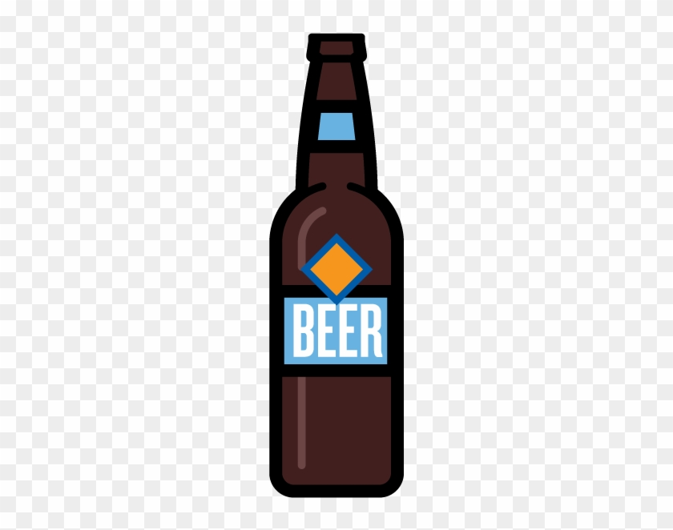
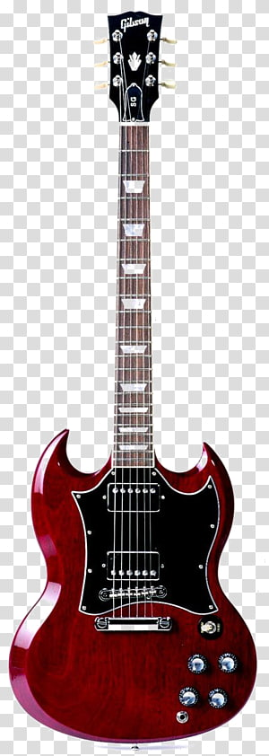

MAGIC COMPASS
FOLLOW THE BOTTLE
Your next beer, this way.
Good places. Open now.
YOUR NEXT LIVE MOMENT
Find your next gig.
Your favourites, your places.


Distance: --- km
Opening hours: Calculating...
Click button to start
Straight-line distanceLocation off
Taste matchChoose a gig
Gigs for you
Looking for gigs…
Other gigs in your places
Extra options, without a taste match. Nearby events may mean a busier area; this is not live crowd information.
About the concert data
Check the event page before travelling. Times and line-ups can change.